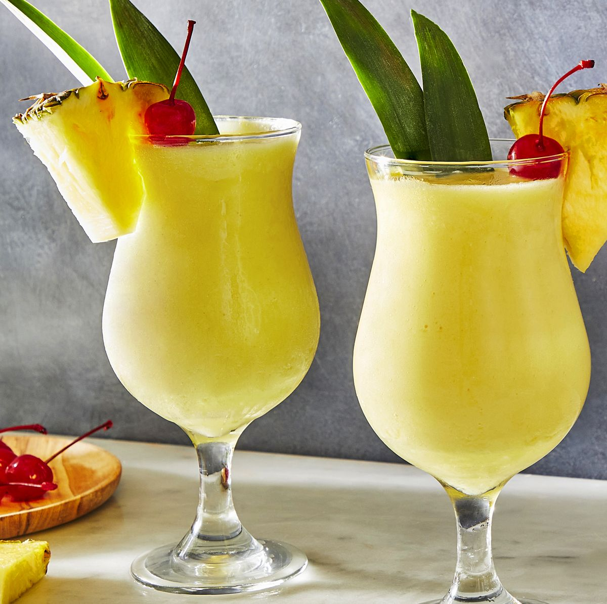
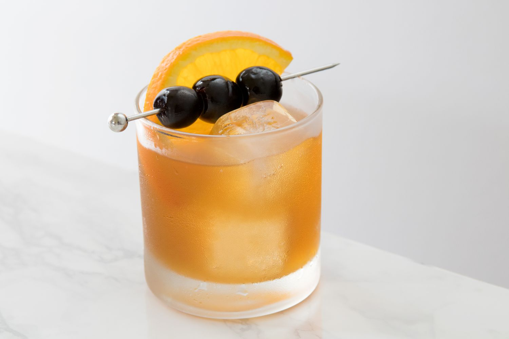
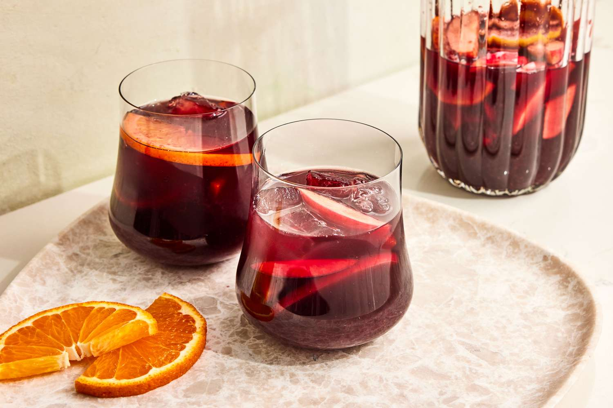
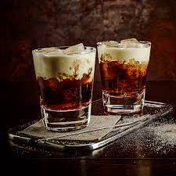
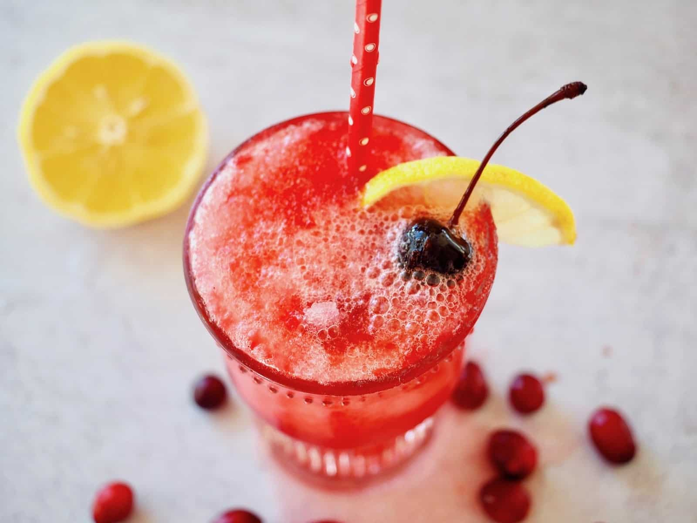

Kenpachi Beverage
Kenpachi Recipes

"Piña Coladas"

The piña colada is a popular classic cocktail invented in Puerto Rico
made with pineapple juice, rum, and coconut, served blended or with crushed ice.
The name means “strained pineapple” in Spanish. The original drink was invented
in San Juan in 1954 by a bartender named Ramón “Monchito” Marrero.
INGRIDIENTS:
1 1/2 cups ice
1/2 cup diced pineapple, frozen
2 ounces pineapple juice
2 ounces canned cream of coconut (such as Coco Lopez)
1 1/2 ounces white rum
1 ounce dark rum
2 pineapple wedges, for garnish
"Margarita"

One of the earliest stories is of the margarita being invented in
1938 by Carlos "Danny" Herrera at his restaurant Rancho La Gloria, halfway between
Tijuana and Rosarito, Baja California, created for customer and former Ziegfeld dancer
Marjorie King, who was allergic to many spirits, but not to tequila.
INGRIDIENTS:
¾ cup tequila
½ cup fresh lime juice (from 4 to 6 limes)
½ cup Triple Sec or Cointreau
½ cup water
"Amareto Sour"

The cocktail was introduced to the public in 1974, devised by the importer
of Amaretto di Saronno as a simple mix of two parts amaretto liqueur to one part lemon juice.
It became a popular cocktail in the 1980s; most bartenders at the time substituted commercial
sour mix for the lemon juice.
INGRIDIENTS:
1½ ounces Amaretto liqueur
1 ounce simple syrup (dissolve an equal amount of sugar in water)
¾ ounce fresh lemon juice
"sangria"

Originally, sangria was aged wine mixed with fruit and spices,
such as cinnamon, then evolved through time into regional variations.
Our recipe combines red wine with orange juice, brandy, apples, blueberries,
strawberries, and a cinnamon stick to create the classic fruity, spiced flavor.
INGRIDIENTS:
1 bottle of red wine
2 tablespoons sugar
1 ounce brandy
1 thinly sliced navel orange
½ pint blackberries
1 cup club soda
"White Russian"

A white Russian is a cocktail made with vodka,
coffee liqueur (e.g., Kahlúa or Tia Maria)
and cream served with ice in an old fashioned glass.
INGRIDIENTS:
2 ounces vodka
1 ounce Kahlúa/li>
1 ounce heavy cream
"Cranberry-Lemon Spritz"

This refreshing and bright cocktail just might become your holiday go-to recipe.
It's great for people who love a tall pour but don't want something over-the-top sweet.
Instead, just a spoonful of sugar livens up the tart cranberries and a generous pour of
lemon juice.
INGRIDIENTS:
8 frozen cranberries
1 ½ tablespoons fresh lemon juice (from 1 lemon)
½ tablespoon sugar/li>
¼ cup (2 oz.) vodka
2 tablespoons cranberry juice cocktail
½ cup club soda, chilled